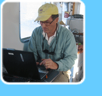
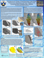
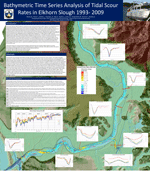
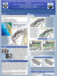
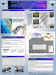

| PUBLICATIONS |  |
| SFML staff -Publications -Reports -Capstones & MS Theses -Research Posters & Student Posters |
(note: downloading copyrighted papers or articles constitutes a formal request for a reprint for personal academic use only)
Quan, S., R.G. Kvitek, D.P. Smith, G.B. Griggs (2013). Using vessel-base LIDAR to quanity coastal erosion during El Niño and Inter-El Niño periods in Monterey Bay, California. J. of Coastal Reserach: 555-565. [PDF]
Davis, A.C.D., R.G. Kvitek, C.B.A. Mueller, M.A. Young, C.D. Storlazzi, E.L. Phillips (2013). Distribution and abundance of rippled scour depressions along the California coast. Continential Shelf Research Volume 69: 88-100. [PDF]
Hallenbeck, T.R., R.G. Kvitek, J. Lindholm (2012). Rippled scour depressions add ecologically significant heterogeneity to soft-bottom habitats on the continental shelf. Mar. Ecol. Progr. Ser. Vol. 468: 119-133. [PDF]
Barnard, P.L., Erikson, L.H., Rubin, D.M., Dartnell, P. and Kvitek, R.G. (2012). Analyzing bedforms mapped using multibeam sonar to determine regional bedload sediment transport patterns in the San Francisco Bay coastal system. Sedimentology, In: Li, M.Z., Sherwood, C.R., and Hill, P.R. (Eds.), . 440 pp.
Iliffe, T.M., R. Kvitek, S. Blasco, K. Blasco, R. Covill. (2011). Search for Bermuda's deep water caves. Hydrobiologia, DOI 10.1007/s10750-011-0883-1. [PDF]
Young, M.A., R.G. Kvitek, P.J. Iampietro, C.D. Garza, R. Maillet, R.T. Hanlon. (2011). Seafloor mapping and landscape ecology analyses used to monitor variations in spawning site preference and benthic egg mop abundance for the California market squid (Doryteuthis opalescens). J. Experimental Marine Biology and Ecology. Vol. 407: 226-233. [PDF].
Barnard, P.L., L.H. Erikson, R.G. Kvitek. (2011). Small-scale sediment transport patterns and bedform morphodynamics: new insights from high-resolution multibeam bathymetry. Geo. Mar. Lett. DOI: 10.1007. [PDF].
Young, M.A., P.J. Iampietro, R.G. Kvitek, C.D. Garza. (2010). Multivariate bathymetry-derived generalization linear model accurately predicts rockfish distribution on Cordell Bank, California, USA. Mar. Ecol. Progr. Ser. Vol. 415: 247-261. [PDF].
Iampietro, P.J., M.A. Young, R.G. Kvitek. (2008). Multivariate prediction of Rockfish Habitat Suitability in Cordell Bank National Marine Sanctuary and Del Monte Shalebeds, California, USA. Marine Geodesy, Vol. 31(4): 359-71. [Abstract link]
Kvitek, R.G., J.D. Goldberg, G.J. Smith, G.J. Doucette, M.W. Silver. (2008). Domoic acid contamination within eight representative species from the benthic food web of Monterey Bay, California. Marine Ecology Progress Series 367: 35-47. [PDF]
J.P Xu, Florence L. Wong, Rikk Kvitek, Douglas P. Smith, Charles K. Paull. (2008). Sandwave migration in Monterey Submarine Canyon, Central California. Marine Geology 248: 193-212. [PDF]
Smith, D.P., R.G. Kvitek, P.J. Iampietro, K. Wong. (2007). Twenty-nine months of geomorphic change in upper Monterey canyon (2002-2005). Marine Geology 236: 79-94.
(This article is published by an Elsevier journal and requires that articles be requested rather than openly posted on the internet. This reprint can be found on the Science News Direct website at this link. You may also request a copy from the authors via email.)
Barnard, P.L., D.M. Hanes, D.M. Rubin and R.G. Kvitek (2006). Giant sand waves at the mouth of San Francisco Bay. EOS 87(29): 285. [PDF]
Butler, J., M. Neuman, D. Pinkard, R. Kvitek, and G. Cochrane (2006). The use of multibeam sonar mapping techniques to refine population estimates of the endangered abalone (Haliotis sorenseni). Fishery Bulletin 104(4): 521-532. [PDF]
Conlan, K.E., G.H. Rau, R.G. Kvitek (2006). d13C and d15N shifts in benthic invertebrates exposed to sewage from McMurdo Station, Antarctica. Marine Pollution Bulletin 52: 1695-1707.
Berkman, P.A. et al (2005). Marine research in the latitudinal gradient project along Victoria Land, Antarctica. Scientia Marina 69 (Suppl 2): 57-63. [PDF]
Conlan, K.E. and R.G. Kvitek. (2005). Recolonization of soft-sediment ice scours on an exposed Arctic coast. Marine Ecology Progress Series 286:21-42. [PDF]
Iampietro, P.J., R.G. Kvitek, E. Morris. (2005). Recent advances in automated genus-specific marine habitat mapping enabled by high-resolution multibeam bathymetry. Marine Technology Society v.39 no.3, 83-93. Y [PDF]
[The MTS copyrighted papers on this web site are posted with permission of the Marine Technology Society.] Y
Kvitek, R.G. and C.K. Bretz (2005). Shorebirds alter feeding behavior in response to harmful algal bloom toxins in bivalve and crustacean prey. Marine Ecology Progress Series 293: 303-309.
Smith, D.P, G. Ruiz, R.G. Kvitek, P.J. Iampietro. (2005). Semiannual patterns of erosion and deposition in upper Monterey Canyon, California. GSA Bulletin, v. 117, no. 9/10: 1132-1143. [paper]
Cattaneao, V.R., C.M. Harris, S.M. Grant, R.G. Kvitek, P.J. Iampietro, et al. (2004). Terra Nova Bay Antarctic Specially Protected Area Map. Programma Nazionale di Ricerche in Antartide.
Kvitek, R.G. and C.K. Bretz (2004). Harmful algal bloom toxins protect bivalve populations from sea otter predation. Marine Ecology Progress Series 271: 233-243.
Thomas, K., R.G. Kvitek, C.K. Bretz. (2003). Effects of human activitiy on the forging behavior of Sanderlings, Calidris alba. Biological Conservation 109: 67-71.
Bretz, C.K., T.J. Manouki, and R.G. Kvitek. (2002). Emerita analoga (Stimpson) and an indicator species for paralytic shellfish poisoning toxicity along the California coast. Toxicon 40: 1189-1196.
Ferdin, M.E., R.G. Kvitek, C.K. Bretz, C.L. Powell, et al. (2002)Emerita analoga (Stimpson)- Possible new indicator species for the phytotoxin domoic acid in California coastal waters. Toxicon 40: 1259-1265.
Bretz, C.K., R.G. Kvitek, P.J. Iampietro. (1999). A case study in the application of spatial data acquisition tools and multimedia GIS for environmental monitoring and management in Antarctica. Antarctic Journal of the U.S. 1998 Semiannual Review Issue (2).
Kvitek, R.G., Bretz, C.K., P.J. Iampietro. (1999). Underwater crater discovered at McMurdo Station on the slopes of Cape Armitage, Ross Island, Antarctica. Antarctic Journal of the U.S. 1998 Semiannual Review Issue (2).
Bretz, C.K., R.G. Kvitek, P.J. Iampietro. (1998). A case study in the application of spatial data acquisition tools and multimedia GIS for environmental monitoring and management in Antarctica. EOM.7:11-13. [paper]
Conlan, K. E., H. S. Lenihan, R. G. Kvitek, and J. S. Oliver. (1998). Ice scour disturbance to nearshore benthic communities in the Canadian High Arctic. Marine Ecology Progress Series. 166: 1-16.
Engel, J. and R. Kvitek. (1998). Effects of otter trawling on a benthic community in Monterey Bay National Marine Sanctuary. Conservation Biology. 12: 1204-1214 [PDF]
Kvitek, R.G., E.C. Bowlby, and P. Iampietro. (1998). Sea Otters and Benthic Prey Communities: A Direct Test of the Sea Otter as Keystone Predator in Washington State. Marine Mammal Science. Marine Mammal Science. 14: 895-902.
Kvitek, R.G., K.E. Conlan, and P. Iampietro. (1998). Black pools of death: Hypoxic, brine-filled ice gouge depressions become lethal traps for benthic organisms in a shallow Arctic embayment. Marine Ecology Progress Series. 162: 1-10.
Worcester, S., R.G. Kvitek. (1997). The value of green campus projetcs: A case study from California State University Monterey Bay. In: Conference Proceedings: Greening of the Campus Conference, Ball State Unibversity, Muncie, IN.
Kvitek, R.G. (1993). Paralytic shellfish toxins as a chemical defense in the butter clam (Saxidomus giganteus). In: Toxic Phytoplankton Blooms in the Sea, 5th Int'l Conference Proceedings on Toxic Marine Phytoplankton. T.J. Smayda and Y. Shimizu, eds.
Kvitek, R.G., C.E. Bowlby, M. Steadler. (1993). The diet and foraging behavior of sea otters in southeast Alaska. Marine Mammal Science 9: 168-181.
Kvitek, R.G. and J.S. Oliver. (1992). The influence of sea otters on prey communities in southeast Alaska. Marine Ecology Progress Series 82:103-113.
Kvitek, R.G., J.S. Oliver, A.R. DeGange, B.S. Anderson. (1992). Changes in soft-bottom prey communities along a gradient in sea otter predation. Ecology 73: 413-428.
Kvitek, R.G. (1991). Paralytic shellfish poisoning toxins sequestered by bivalves as a defense against siphon nipping fish. Marine Biology 111: 369-374.
Kvitek, R.G. (1991). Sequestered paralytic shellfish poisoning toxins mediate Glaucous-winged gull predation on bivalve prey. Auk 108:381-392.
Kvitek, R.G., A.R. DeGange, M.K. Beitler. (1991). Paralytic shellfish toxins mediate sea otter food preference. Limnology and Oceanography 36: 393-404.
Kvitek, R.G., M.K. Beitler. (1991). Relative insensitivity of butter clam neurons to saxitoxin: a pre-adaptation for sequestering paralytic shellfish poisoning toxins as a chemical defense. Marine Ecology Progress Series 69: 47-54.
Kvitek, R.G. (1990). Sea Otters and Paralytic Shellfish Poisoning in Soft-Bottom Communities: Influence and Interactions. PhD Dissertation, Univ. of Washington.
Kvitek, R.G. (1989). Hydrodynamic morphology and behavior of a free-living, soft sediment bryozoan (Alcyonidium disciforme). J. Experimental Marine Biology and Ecology 125: 13-32.
Kvitek, R.G., D. Shull, D. Canestro, E. Bowlby and B. Troutman. (1989). The sea otters and benthic prey communities in Washington State. Marine Mammal Science 5:266-280.
Kvitek, R.G., M.K. Beitler. (1988). A case for sequestering of paralytic shellfish toxins as a chemical defense. J. Shellfish Research 7: 629-636.
Kvitek, R.G., J.S. Oliver. (1988). Sea otter foraging habits in soft-bottom environments. In: Community Ecology of the Sea Otter. G.R. VanBlaricom and J.A. Estes, eds. Springer-Verlag, N.Y. pp 22-47.
Kvitek, R.G., A.K. Fukuyama, B.S. Anderson, B.K. Grimm. (1988). Sea otter foraging on deep-burrowing bivalves in a California coastal lagoon. Marine Biology 98: 157-167.
Kvitek, R.G. and J.S. Oliver. (1986). Side-scan sonar impressions of gray whale feeding grounds along Vancouver Island, Canada. Continental Shelf Research. 6:639-654.
Oliver, J.S., R.G. Kvitek, and P.N. Slattery. (1985). Walrus feeding disturbance: scavenging habits and recolonization of the Bering Sea benthos. Journal of Experimental Marine Biology and Ecology. 91:233-246.
Oliver, J.S. and R.G. Kvitek. (1984). Side scan sonar and diver observations of gray whale feeding grounds. Biological Bulletin 167: 264-269.
California Seafloor Mapping Program - Central Coast Marine Protected Areas Booklet (2012)
Barnard, P.L., D.M. Hanes, R.G., Kvitek, and P.J. Iampietro (2006). Sand waves at the mouth of San Francisco Bay, California. U.S. Geological Survey, Scientific Investigations Map 2006-2944, 5 map sheets. [website]
Dartnell, P., P.L. Barnard, J.L. Chin, D.M. Hanes, R.G. Kvitek, P.J. Iampietro, and J.V. Gardner. (2006). UNDER THE GOLDEN GATE BRIDGE- VIEWS OF THE SEAFLOOR NEAR THE ENTRANCE TO SAN FRANCISCO BAY, CALIFORNIA. United States Geological Survey Scientific Investigations Map 2917.
Material Worlds, Summary article on Monterey Canyon research. For complete results, see Smith, D.P., G. Ruiz, R.G. Kvitek, and P.J. Iampietro. (2005). Semiannual patterns of erosion and deposition in upper Monterey Canyon from serial multibeam bathymetry. GSA Bulletin, Sept/Oct 2005, v. 117 no. 9/10, 1132-1143.
Kvitek, R.G. and C.K. Bretz. (2005). Statewide Marine Mapping Planning Workshop. Prepared for California Coastal Conservancy. [Final report] [website]
Kvitek, R.G., Iampietro, P.J., Bretz,
C.K., Thomas, K., Zurita, S., Jones, B., Summers-Morris, E. (2004).
Hydrographic Data Acquisition in support of MLPA and MLMA implementation.
Final Report & Appendix paper. Prepared for California Department
of Fish and Game. [Final
report: Summary] [Final
Report: Download Document, 14MB]
Appendix paper: (Summers-Morris, E.
Using GIS landscape analysis tools with high-resolution multibeam bathymetry
and ROV mapping to model rockfish distribution and abundance on the Del
Monte shale beds, Monterey Bay, California).
[Appendix:
Summary] [Appendix
Download, 8MB]
Kvitek, R.G., Iampietro, P.J., Thomas, K., Summers-Morris, E. (2004). Victoria Land Latitudinal Gradient Project: Benthic Marine Habitat Characterization. Field Report. Prepared for National Science Foundation, Office of Polar Programs, Antarctic Biological Sciences. [Field Report w/ Maps] [Scientia Marina paper, PDF]
Kvitek, R.G., Iampietro, P.J., Summers-Morris, E. (2003). Integrated Spatial Data Model Tools Set for the Auto-classification and Delineation of Species-Specific Habitat Maps from High-Resolution, Digital Hydrographic Data. Prepared for NOAA National Ocean Service (NOS).[report PDF]
Kvitek, R.G., Leisten, T.M., Iampietro, P.J., Bretz, C.K. (2003). Santa Monica Bay Mapping Project (SMBMP). Final Report & GIS User's Guide. Prepared for Santa Monica Bay Restoration Project.[report PDF]
Kvitek, R.G., Bretz, C.K., Iampietro, P.J. (2003).
Fisheries Habitat Characterization of the California Continental Margin:
Identification, Quantification, and Synthesis of Existing Information.
Final Report. Prepared for National Sea Grant College System, Project
#R/F-181B.[report PDF]
Bretz, C.K., A. Green, R.G. Kvitek, M. Beets. (2000). California Marine Habitat Task Force. Strategic Planning Meeting, Final Report. Prepared for the California Department of Fish and Game. 112p.[report PDF]
Carney, D. and R.G. Kvitek. (1990). Survey of the Washington State outer coast and Olympic National Park to determine the distribution, fate and effects of spilled bunker C fuel oil. Battelle NW Laboratories and Minerals Management Service, Department of the Interior.
Kvitek, R.G., C.K. Bretz, and P.J. Iampietro. (1998). McMurdo Station, Antarctica: Winter Quarters Bay Marine Debris Study Final Report & GIS CD-ROM to Office of Polar Programs, National Science Foundation. 43 pp.
Kvitek, R.G., P.J. Iampietro, E. Sandoval, M. Castleton, C. Bretz, T. Manouki, A. Green. (1999). Early Implementation of Nearshore Ecosystem Database Project, Final Report. Prepared for the California Department of Fish and Game. 149p. [report]
Kvitek, R.G., P.J. Iampietro, K. Thomas. (1999). Quantitative Assessment of Sea Otter Benthic Prey Communities with the Olympic Coast National Marine Sanctuary: 1999 Re-survey of 1995 and 1985 Monitoring Stations. Final Report to NOAA, Olympic Coast National Marine Sanctuary [report PDF]
Kvitek, R. G., D. Shull, D. Canestro, E. Bowlby and B. Troutman. (1988). Changes in rocky subtidal communities within a gradient of sea otter predation along the Olympic Peninsula Coast, Washington State. Final Report to Olympic National Park and the Washington State Department of Wildlife, Olympia, Washington.
Seafloor Mapping Lab- California State University Monterey Bay: Supporting Marine Stewardship Through Science, Technology, and Education. Bretz, SFML Staff. Presented at California and the World Ocean conference. Long Beach, California, 9/2006. [poster PDF]
USGS Map (2006) Source: USGS, Pete Dartnell
A number of federal and state agencies along with academic institutions have collected high-resolution multibeam bathymetry data offshore San Diego, CA. While these data have been used for individual research projects, they have yet to be combined into an overall high-resolution bathymetric map of the area. The U.S. Geological Survey, Western Coastal and Marine Geology Team in Menlo Park, CA has created and publish a 2-sheet map series entitled "Multibeam Bathymetry and Selected Perspective Views Offshore San Diego, California" utilizing most of the multibeam bathymetry data collected to date. This is a multi-institution mapping effort between the USGS, Sand Diego Association of Governments (SANDAG), California State University Monterey Bay, Seafloor Mapping Lab, and SCRIPPS Institute of Oceanography.
Toxic Prey Can Alter the Foraging Strategies of Key Marine Predators. Bretz, Kvitek. Presented at 3rd US Symposium on Harmful Algal Blooms. Asilomar California, 10/2005. [poster PDF]
Integrated Spatial Data Modeling tools for Auto-classification and Deliniation of Species-Specific Habitat Maps from High-Resolution, Digitial Hydrographic Data. Morris, Iampietro. Presented at MBNMS Currents Symposium, 3/2004, and Central Coast Joint Data Committee GIS Day, 11/2004 (award winner).
Quantitative Seafloor Habitat Classification Using GIS Terrain Analysis: Effects of Data Density, Resolution, and Scale. Iampietro, Kvitek. Presented at Symposium on Effects of Fishing Activities on Benthic Habitats: Linking Geology, Biology, Socioeconomics, and Management, Tampa FL, 11/2002. [poster PDF]
Influence of Harmful Algal Blooms on the Foraging Behavior of Shorebirds in Central California. Bretz, Thomas, Kvitek, Barry. Presented at Symposium on Harmful Marine Algae in the United States, Woods Hole Oceanographic Institute, 12/2000, & Monterey Bay National Marine Sanctuary 'Currents' Symposium, 3/2001 (award winner). [poster PDF]
Mediation of Foraging Behavior and Spatial Distribution of the Alaskan Sea Otter by Harmful Algal Blooms. Kvitek, Bretz, Thomas. Presented at Symposium on Harmful Marine Algae in the United States, Woods Hole Oceanographic Institute, 12/2000. [poster PDF]
Emerita analoga (Stimpson) as an Indicator Species for Paralytic Shellfish Poisoning Toxins along the California Coast. Manouki, Thomas, Kvitek, Bretz. Presented at Symposium on Harmful Marine Algae in the United States, Woods Hole Oceanographic Institute, 12/2000. [poster PDF ]
Emerita analoga (Stimpson)- Possible New Indicator Species for the Phytotoxin Domoic Acid in California Coastal Waters. Ferdin, Kvitek, Bretz, Powell, Douchette, Silver, Scholin. Presented at Symposium on Harmful Marine Algae in the United States, Woods Hole Oceanographic Institute, 12/2000, & Monterey Bay National Marine Sanctuary 'Currents' Symposium, 3/2001. [poster PDF ]
Quantitative Assessment of Sea Otter Benthic Prey Communities within the Olympic Coast National Marine Sanctuary: 1999 Re-survey of 1995 and 1985 Monitoring Stations. Kvitek, Iampietro, Thomas. Presented at Puget Sound Research Conference, 2/2001. [poster PDF]
Research Aboard ESSP's R/V MacGinnite. Seafloor Mapping Lab, Earth Systems Science & Policy, California State University Monterey Bay. Informational poster presented at groundbreaking ceremony for the new CSUMB Science Center complex, 8/2001. [poster PDF]
Coastal Watershed Development, Erosion, Marine Habitat Loss, and Kelp Forest Decline in Santa Monica Bay. Leisten, Kvitek, Iampietro, Thomas. Presented at 2nd Annual Water Resources Institute Conference, CSU San Bernardino, 10/2001. [poster PDF]
|  | 2010 Sanctuary Currents Symposium Winning Undergraduate research poster [JPG] Persistence and Change of Geomorphology in Nearshore Rippled Scour Depressions and Rocky Habitat on the Continental Shelf of Monterey Bay, California |
|  | 2009 Sanctuary Currents Symposium |
|  | 2008 Sanctuary Currents Symposium Second place Graduate Division [JPG] Geomorphic Change Detection in the Monterey Bay National Marine Sanctuary- Part 1 |
|  | 2008 Sanctuary Currents Symposium Second place Graduate Division [JPG] Geomorphic Change Detection in the Monterey Bay National Marine Sanctuary- Part 2 |
{kind=link}
{kind=link}
{kind=link}
{kind=link}
Y [The MTS copyrighted papers on this web site are posted with permission of the Marine Technology Society. The Marine Technology Society is a not-for-profit, international, professional association. Founded in 1963, the Society believes that the advancement of marine technology and the productive, sustainable use of the oceans depend upon the active exchange of ideas between government, industry, and academia. The Society holds annual conferences, technical workshops and symposia, in addition to providing publications and online information. This permission does not in any way imply MTS endorsement of any of SFML's products or services.]